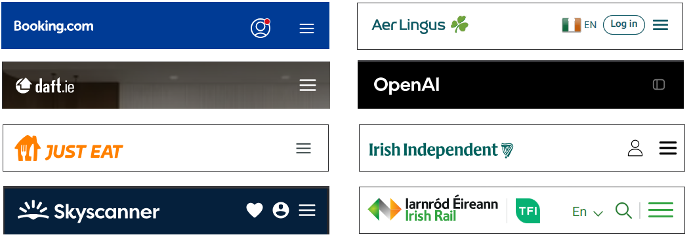
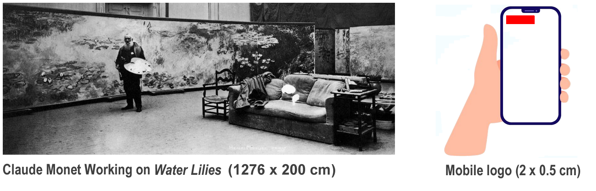

Introduction
You will continue building the personal portfolio website you began in the previous Tutorial.
1: Replace the hero image
Replace the sample hero image with a visual of your own choice.
Use the options at the link below to resize or crop the image dimensions and minimise the file size of your image as required:
For a full-width background image, about 1920px wide and 800px high is a good choice.
For a half-screen image, about 900px x 900px is a good choice.
Rename your image to something you will easy to remember, such as hero-image.jpg and save it in your 'main' 📁 assets/img folder.
In the <head> of your Home page, preload your hero image as follows:
<link rel="preload" href="assets/img/hero-image.jpg" as="image">
2: Add a favicon to your web pages
A favicon is a small icon (really a set of icons for different screens) that is displayed within the browser tabs and bookmarks bar of a web browser.

If you have not already done so, create a favicon using the instructions in the Working with Favicons Tutorial.
Place your favicon files in your 📁 websites/assets/img/favicons sub-folder.
In the <head> of your Home page, the links to your favicon files will be as follows.
<link rel="apple-touch-icon" sizes="180x180" href="assets/img/favicons/apple-touch-icon.png">
<link rel="icon" type="image/png" sizes="32x32" href="assets/img/favicons/favicon-32x32.png">
<link rel="icon" type="image/png" sizes="16x16" href="assets/img/favicons/favicon-16x16.png">
<link rel="manifest" href="assets/img/favicons/site.webmanifest">
For your Portfolio, Contact and Store pages, your links will begin with "../assets" and not just "assets". See below.
<link rel="apple-touch-icon" sizes="180x180" href="../assets/img/favicons/apple-touch-icon.png">
<link rel="icon" type="image/png" sizes="32x32" href="../assets/img/favicons/favicon-32x32.png">
<link rel="icon" type="image/png" sizes="16x16" href="../assets/img/favicons/favicon-16x16.png">
<link rel="manifest" href="../assets/img/favicons/site.webmanifest">
3: Replace the sample logo with your own
You will want to replace the sample logo with your own. A few points to note.
The shape of your logo
Your logo should be about 200px wide and 40px tall so that it is readable on a mobile phone screen. See the examples below.
See the examples below.
Your logo should be a rectangle, not a square.
The simplicity of your logo
Your logo will (probably not) appear on a large poster or billboard ad. It will be displayed on a mobile phone screen.
Your logo needs to look good at the small size of about 2 x 0.5 cm.
Follow the example of global brands below that have simplified their logos for modern digital screens.

When you have finished creating your logo with BeFunky or Canva or similar online software, save it in your 'main' 📁 websites/assets/img folder and link to it from your Home, Portfolio, Contact and Store web pages.
4: Choose a colour palette
Use the websites below or similar to choose a nice colour palette (colour combination) for your Home, Portfolio and Contact pages.
Update your custom.css stylesheet with your colour choices.
5: Add one or two Google Fonts
Follow the instructions here to add a Google Font or Fonts.
Here are the more widely-used serif and sans-serif fonts at the moment.
| SERIF FONTS | SANS SERIF FONTS |
|---|---|
| Playfair Display (headings) | Bebas Neue (headings) |
| Prata (headings) | Work Sans |
| Abril Fatface (headings) | Source Sans Pro |
| PT Serif | Rubik |
| Domine | Outfit |
| Libre Baskerville | Montserrat |
| Roboto Slab | Open Sans |
See the websites below for font-pairing inspiration.
6: Colour contrast
The WebAIM guidelines recommend a minimum contrast ratio of 4.5:1 for text on web pages. For headings and other large text, a contrast ratio of 3:1 is sufficient.
Use the website below to check the contrast ratio of your chosen colour combinations:
7: Check for any performance issues
After you have uploaded your work to GitHub, check your Home, Portfolio and Contact web pages for any issues that affect their performance using the website below from Google: